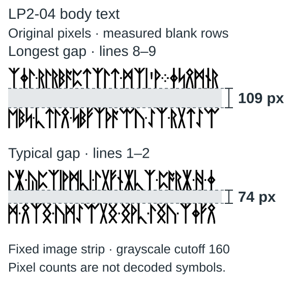

Spacing between lines
Inspect the original pages with measured pixel gaps, clear overlays and a view of each line pair.
On this page
Choose a page to see the space between two printed lines, measured directly on the original image. The guides show exactly where each measurement starts and ends.


The bracket measures the space between the marked text edges, in original-image pixels. Resizing the picture does not change the count. Line numbers start at one within the measured part of the page.
Measured gaps
| Page or part | Space between lines |
|---|---|
| LP2-04 | 73–75 px; one gap of 109 px |
| LP2-35 | 73–75 px; one gap of 110 px |
| LP2-57 | 73–74 px; one gap of 129 px |
| LP2-14 and LP2-16 | 73–75 px throughout the measured text |
| LP2-15 · rune text | All six gaps are 74 px |
| LP2-15 · number panel | 62, 61, 79 px |
The number panel uses a different layout from the rune text. These are selected regions, not a complete manuscript survey; Show whole page reveals where each region sits.
What the wider gaps tell us
The spacing difference is real; its purpose is unknown. In the punctuation comparison, six selected lines containing an apostrophe, quotation mark or digit have wider gaps below them; the other 28 measured gaps are ordinary. These selected examples do not establish why. The rune-line study and number-panel comparison show the other measurements. None establishes a cipher rule or a way to read the gaps as binary.
Download all measurements (CSV) · Coordinates and source images (JSON)
Looking for the earlier byte-count claim? The separate file-size comparison covers that question.
Manuscript pages discussed
LP2-04 · LP2-14 · LP2-15 · LP2-16 · LP2-35 · LP2-57